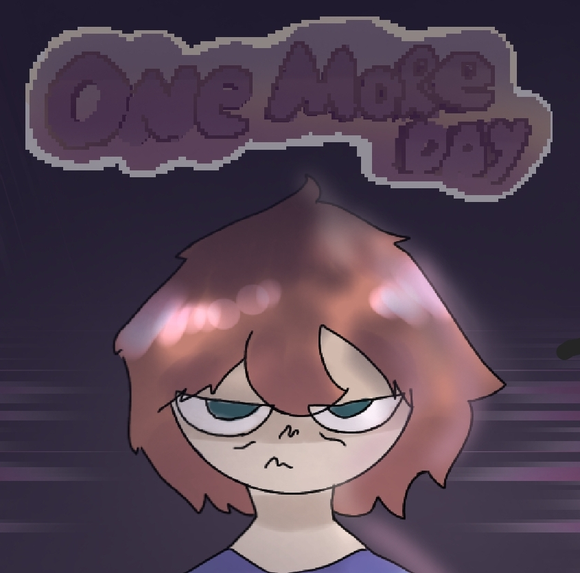
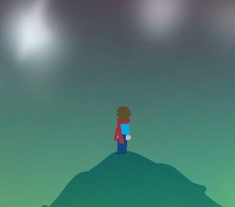

One More Day
EN DESARROLLO

Pixel Forge es un pequeño estudio independiente dedicado a crear videojuegos originales, experimentales y llenos de creatividad. Nuestro objetivo es convertir ideas únicas en experiencias jugables, combinando pixel art, música, narrativa y programación.
Actualmente trabajamos en proyectos como FALSE PLAYER y OMD, explorando diferentes estilos, mecánicas e historias para crear juegos que se sientan hechos con personalidad propia.
Forjando aventuras píxel a píxel.
EN DESARROLLO

PAUSADO

EN DESARROLLO
PAUSADO
PRÓXIMAMENTE
PRÓXIMAMENTE
DESCARGAS DISPONIBLES PRONTO